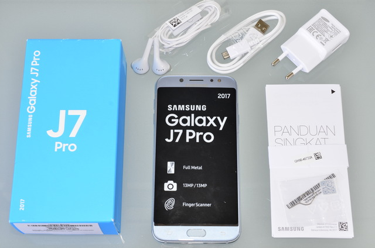

Bulan Juli 2017 kemarin, Samsung memboyong dua smartphone terbarunya, yakni Samsung Galaxy J5 Pro dan Samsung Galaxy J7 Pro. Masih ditargetkan terutama untuk pasar smartphone kelas menengah, kedua smartphone ini dimaksimalkan untuk bisa memenuhi kebutuhan pengguna masa kini, seperti fitur kamera yang lebih baik, baterai besar, serta fitur Ultra Data Saving untuk mereka yang ingin hemat kuota. Salah satu produk tersebut, Samsung Galaxy J7 Pro, telah hadir di meja pengujian Jagat Gadget kali ini untuk diuji coba lebih lanjut dan tentunya lebih mendalam. Seperti apakah performa dan kebolehan yang dimiliki smartphone ini?
DesainJika dibandingkan dengan Samsung Galaxy J7 sebelumnya, Samsung Galaxy J7 Pro ini memiliki desain serta finishing metal body yang akan terlihat lebih menarik. Bagian bezel atau bingkai terutama di sisi kiri dan kanan layar kini semakin tipis sehingga layar akan terlihat lebih lega karenanya. Desain untuk sudut-sudut perangkat ini sendiri menggunakan 2,5D Glass yang membuat kurva sudut lebih membulat, tidak tajam, tetapi masih cukup ergonomis untuk digenggam. Secara keseluruhan desainnya, Samsung Galaxy J7 Pro ini memiliki kesan yang cukup elegan dan terkesan lebih “mewah” daripada seri sebelumnya, disertai dengan penampilan yang tidak ikut-ikutan mirip seperti smartphone brand Tiongkok lain yang cenderung mirip satu dengan yang lainnya.  Samsung Galaxy J7 Pro memiliki dimensi 152,5 x 74,8 x 8 mm dengan bobot 181 gram, membuat perangkat akan terasa lebar seperti standar smartphone ukuran lebih dari 5 inch pada umumnya, tetapi cukup ramping serta ringan namun kokoh ketika digunakan. Ukuran layar utamanya sendiri sebesar 5,5 inch resolusi 1920 x 1080 Full HD dengan jenis layar Super AMOLED dan kedalaman warna 16M yang pastinya akan membuat tampilan warna menjadi lebih cerah dan kontras.  Pada sisi sebelah kiri perangkat, merupakan lokasi tombol volume, bersama dengan slot untuk SIM1/SIM2 serta microSD card terpisah. Sementara sisi sebelah kanan merupakan lokasi untuk tombol power sekaligus speaker utamanya. Untuk bagian atas, tidak memiliki port apapun karena port untuk USB 2.0, jack audio 3.5mm sekaligus mic receiver semua berlokasi di bagian bawah perangkat.   Tombol operasi utama berada di bagian bawah permukaan smartphone, di mana terdapat juga tombol Home yang sekaligus berfungsi sebagai sensor Fingerprint berada. Sementara untuk bagian permukaan atas, merupakan posisi di mana kamera depan bersama LED flash dan speaker receiver berada. Untuk kamera utama dan LED flash tambahan, berada di bagian belakang atas perangkat.
SpesifikasiSamsung Galaxy J7 Pro dipersenjatai dengan SoC octa-core buatan dari Samsung sendiri, yaitu Exynos 7870 1.60GHz, RAM 3GB serta kapasitas storage 32GB yang bisa ditambahkan hingga 256GB dengan menggunakan microSD card tambahan. Besar RAM dan storage internal ini tergolong cukup standar di mana sudah bisa ditemukan di beberapa smartphone terbaru lainnya, akan tetapi performa sesungguhnya dengan menggunakan benchmark acuan kami untuk pengujian smartphone akan kami perlihatkan lebih dalam di halaman berikut. Kamera utama untuk Galaxy J7 Pro ini menggunakan sensor resolusi 13 MP dengan bukaan f/1.7 serta fitur Autofocus, serta mampu merekam video resolusi Full HD di 30 fps. Sementara kamera depan menggunakan sensor beresolusi 13 MP juga, dengan bukaan f/1.9. Samsung Galaxy J7 Pro ini memiliki kelengkapan lain seperti misalnya konektivitas 4G LTE, Wi-Fi 802.11 a/b/g/n/ac 2.4+5GHz, Bluetooth v4.1, Wi-Fi Direct, ANT+, hingga fitur NFC. Sensor yang dimiliki selain Fingerprint pada smartphone ini juga tergolong lengkap, memiliki dukungan terhadap Gear Circle (Manager Support), Gear Fit2, Gear S2, Gear S3, dan Gear IconX. Galaxy J7 Pro ini sendiri juga telah dilengkapi dengan fitur Dual Messenger, di mana pengguna bisa login dua akun sekaligus pada satu aplikasi Messenger. Samsung Galaxy J7 Pro ini sendiri berjalan di OS Android 7.0 dan berkapasitas baterai cukup besar yakni 3600mAh, namun sayangnya tanpa adanya fitur Fast Charging. Sehingga karenanya, pengisian ulang daya akan memakan waktu lebih lama dari seharusnya.
Paket Pnejualan Samsung Galaxy J7 Pro ini memiliki kelengkapan paket penjualan yang tergolong standar. Dalam box, pengguna akan dapat menemukan 1 buah unit Galaxy J7 Pro, panduan singkat dalam bahasa Indonesia dan Inggris, pin untuk membuka slot SIM card/microSD card, adapter serta kabel charger microUSB. Dalam paket kali ini kami tidak menemukan adanya earphones maupun soft case tambahan untuk bisa digunakan langsung terhadap unit perangkat, sehingga pengguna perlu membelinya lebih dulu secara terpisah jika ingin melengkapi kedua hal tersebut.